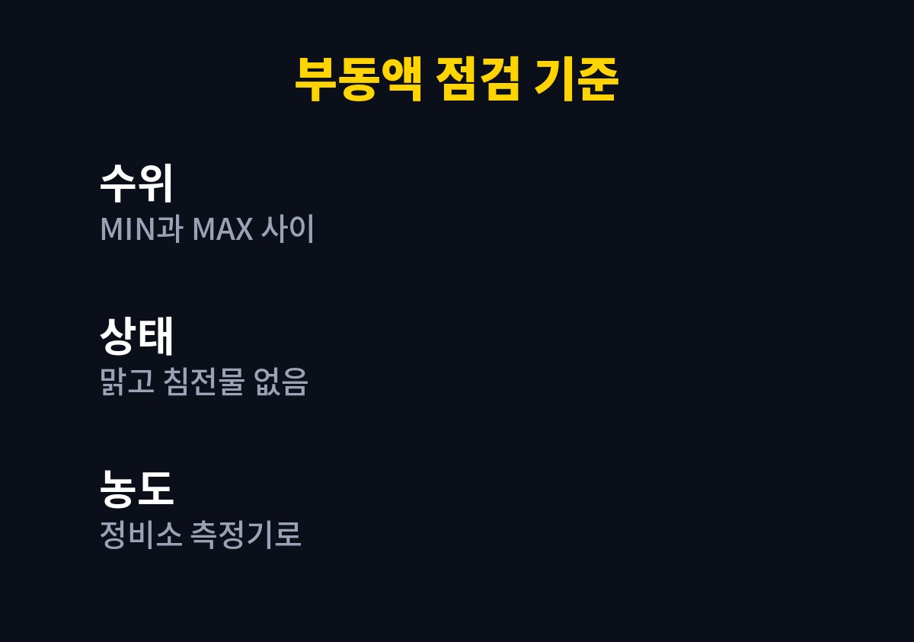
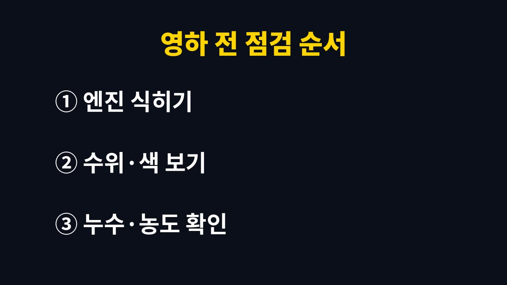

부동액 점검은 시동을 끄고 엔진이 식은 상태에서 보조탱크 수위가 MIN(L)과 MAX(F) 눈금 사이에 있는지 보는 것부터 시작한다.
교환 주기는 차종과 냉각수 종류마다 달라서, 남의 차 기준이 아니라 내 차 설명서의 점검표를 따른다.
밤 기온이 영하로 떨어지는 날이 늘어나는 11월은 냉각수 양과 상태를 한 번 보기 알맞은 때다.
부동액은 이름 때문에 겨울용으로 여기기 쉽다.
실제로는 물과 섞인 냉각수로 사계절 내내 엔진 열을 식히고 냉각 계통 안쪽의 부식도 막는다.
여름에 수돗물만 몇 번 보충해 두었다면 겨울이 오기 전에 농도가 묽어져 있을 수 있다.
급할 때 물을 조금 붓는 것은 응급조치로 쓸 수 있다.
문제는 그게 반복될 때다.
물 비율이 높아질수록 어는점이 올라가서, 추운 밤사이 냉각수가 얼면 라디에이터나 호스가 손상될 수 있다.
그래서 물을 보충한 적이 있다면 겨울 전에 정비소에서 농도를 재 보는 편이 낫다.
냉각수 색은 제조사와 규격에 따라 초록, 분홍, 파랑 등으로 다르다.
색이 진하다고 성능이 남아 있다는 뜻은 아니다.
다만 녹물처럼 갈색으로 탁해졌거나 표면에 기름 막이 떠 있으면 교환 시기가 지났거나 다른 이상이 있다는 신호로 보고 점검을 받는다.
냉각수 점검은 보닛을 열고 반투명한 보조탱크 옆면 눈금을 보는 것으로 충분하다.
엔진이 뜨거울 때 라디에이터 캡이나 탱크 캡을 열면 끓는 냉각수가 뿜어져 나올 수 있어 반드시 식은 뒤에 본다.
아래 표는 내가 겨울 전마다 보는 항목이다.
| 확인 항목 | 정상으로 보는 상태 | 이상할 때 할 일 |
|---|---|---|
| 수위 | MIN(L)과 MAX(F) 사이 | 같은 규격 냉각수로 보충 |
| 색과 상태 | 맑고 침전물이 없음 | 정비소에서 교환 여부 확인 |
| 농도 | 부동액과 물 대략 절반씩(설명서 우선) | 측정기로 어는점 확인 |
| 주변 흔적 | 주차 자리 바닥이 말라 있음 | 호스·라디에이터 누수 점검 |
| 교환 시기 | 설명서 점검표 범위 안 | 교환 기록과 주행거리 비교 |

농도는 눈으로 알 수 없어서 정비소 측정기로 재야 한다.
나는 따로 시간을 내기보다 엔진오일을 갈 때 함께 재 달라고 부탁하는 쪽이 편했다.
해 보니 수위가 정상이고 물을 보충한 적도 없다면 매년 농도를 잴 필요까지는 없었다.
요즘 차에는 수명이 긴 장기 냉각수가 들어가는 경우가 많아 첫 교환까지 기간이 꽤 길다.
반면 연식이 오래됐거나 중간에 다른 종류를 보충한 차는 주기를 짧게 잡는다.
그래서 인터넷에 도는 몇 년마다라는 숫자보다 내 차 설명서의 정기 점검표가 정확하다.
설명서에는 보통 정기 점검 장의 표에 냉각수 항목이 따로 있다.
종이 설명서가 없으면 제조사 홈페이지의 디지털 설명서에서 차종과 연식을 고르면 같은 표를 볼 수 있다.
규격이 다른 냉각수를 섞으면 성능이 떨어질 수 있으니, 보충할 때도 설명서가 지정한 제품 규격을 따른다.
중고로 산 차라 교환 기록이 없다면 한 번 교환하고 그날을 기준점으로 삼는 방법도 있다.

한 번 보는 데 5분이면 끝난다.
몇 주 사이에 수위가 눈에 띄게 줄었다면 보충보다 누수 점검이 먼저다.
주행 중 계기판 수온계가 평소보다 높이 올라가거나 냉각수 경고등이 켜지면 안전한 곳에 차를 세우고 엔진을 식힌다.
이때 무리해서 캡을 열기보다 보험 출동 서비스나 가까운 정비소에 묻는 게 빠르다.
다음 점검 때는 와이퍼와 겨울용 워셔액도 같이 보면 월동 준비가 한 번에 끝난다.
※ 2026년 기준 공공기관 안내를 바탕으로 정리한 글이며, 차종과 연식에 따라 기준이 다를 수 있어 차량 설명서와 공식 안내를 함께 확인하길 바란다.